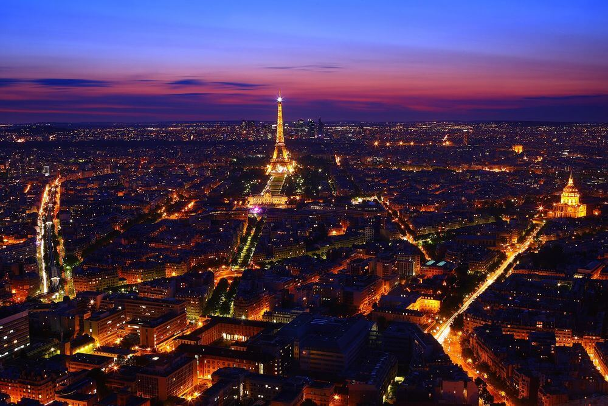
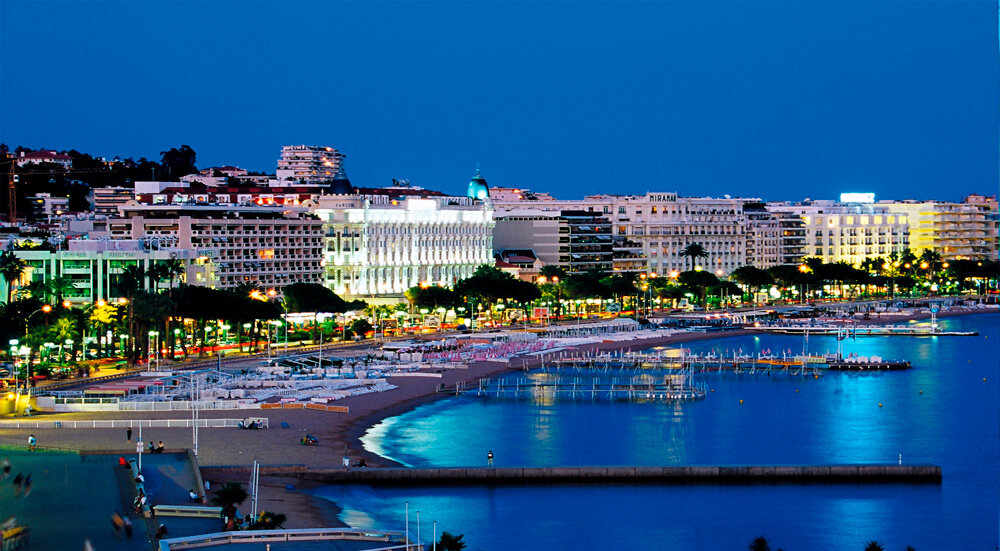
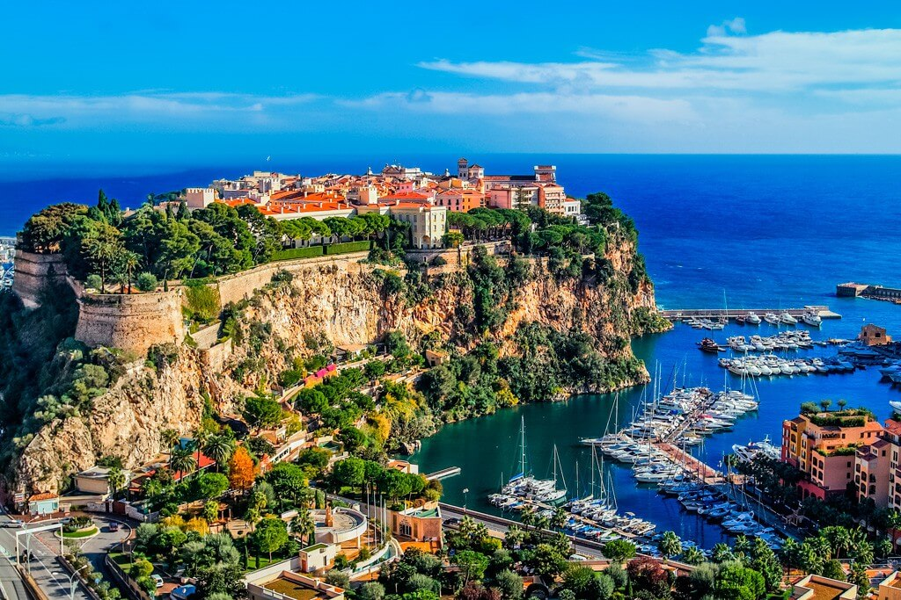
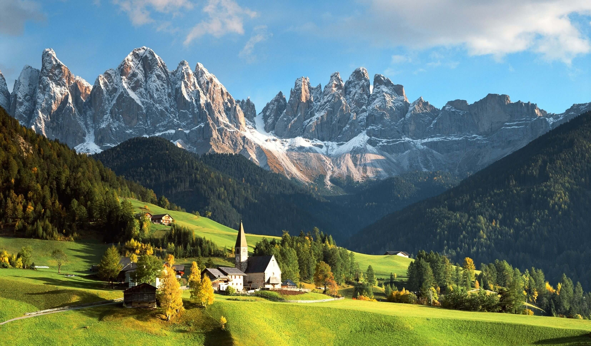
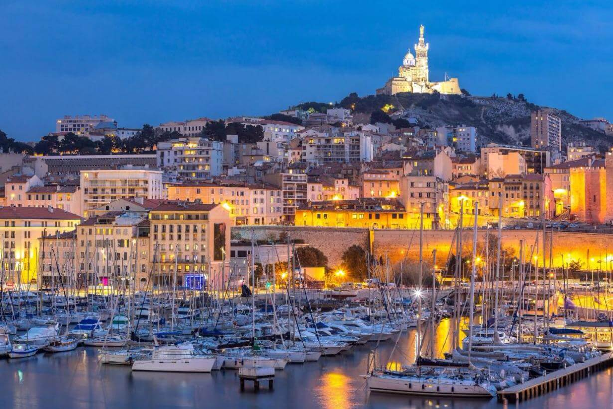

Франція
Фра́нція, офіційна назва Францу́зька Респу́бліка — держава на заході Європи, республіка, яка межує на північному сході з Бельгією, Люксембургом і Німеччиною, на сході з Німеччиною, Швейцарією, південному заході з Іспанією й Андоррою, на південному сході з Італією та Монако на півдні омивається Середземним морем, на заході — Атлантичним океаном. Площа (разом з Корсикою) — 543 965 км². Столиця і найбільше місто — Париж. Окрім метрополії, Франції належать численні заморські території — Гваделупа, Сен-Бартелемі, Сен-Мартен, Французька Гвіана, Мартиніка, Майотта, Реюньйон, Сен-П'єр і Мікелон, Південні й Антарктичні території, Нова Каледонія, Французька Полінезія, Волліс і Футуна.
Париж

Ейфелева вежа. Одна з найбільш розпізнаваних структур у світі і символ Франції.
Якщо Ви не підніметеся на Ейфелеву вежу перебуваючи в Парижі, то втратите дійсно
особливий момент у своєму житті. Розмір залізної вежі величезний. Перебуваючи під
основою вежі важко повірити в ці гігантські пропорції, на фотографіях неможливо
відчути всю велич і красу цієї структури. Ця пам’ятка Парижа обов’язкова для перегляду.
Палац Версаль. Коли був побудований, Версаль став мисливської резиденцією короля.
Сьогодні, однак, це – передмістя Парижа, приблизно в двадцяти кілометрах на північний
захід від французької столиці. Версаль був центром політичної влади у Франції з 1682,
коли Луї XIV перемістився сюди з Парижа, поки королівська родина не була змушена
повернутися до столиці жовтні 1789, з початку Французької революції. Тому Версаль
відомий не тільки як будівля, а й як символ системи абсолютної монархії.
Музей Лувр. Будучи найбільшим музеєм у світі, ця пам’ятка Парижа варта
відвідування. Майже 35,000 об’єктів, від доісторичних до 19-го сторіччя, показані
тут. Це також найбільш відвідуваний музей у світі. Шанувальники мистецтва з усього
світу приїжджають сюди, щоб помилуватися шедеврами. Культові
предмети мистецтва зберігаються тут у безпеці, такі як Джоконда (Мона Ліза) Леонардо Да Вінчі.
Ла Валле Віладж. Це найкраще місце для шопінгу і покупки брендів високого класу,
дуже близько розташоване до центрального Парижу. Магазини Валле-Вілледж пропонують
надзвичайно популярні бренди класу люкс, такі як Versace, D&G, Гуччі і т.д. Влаштовані
на красивій затишній вуличці, ці невеликі магазини надають Вам розкішний досвід шопінгу.
Базиліка Сакре-Кер. Популярний орієнтир, базиліка Сакре-Кер розташована на вищій
точці пагорба Монмартр, найвищого пункту в місті. Спорудження може бути відмічена
фактично з будь-якої точки в Парижі, так як розташована зверху великого пагорба. Це –
Римсько-католицька церква. Область Монмартр навколо цієї церкви дуже добре відома
мистецтвом. Тут є багато красивих, вузьких європейських вулиць.
Ніцца. Канни
Улюбленим місцем еліти і любителів витонченості шику і розкоші, звичайно ж, є Ніцца і Канни. Улюблене місце аристократії минулих століть, яке не втратило свій шарм і популярність до наших днів. Це один з найпопулярніших курортів блакитного берега, який ніколи не перестане дивувати туристів своїм вишуканим пейзажем. Відрізняється м'яким сонячним середземноморським кліматом. Також в Ніцці є аеропорт, так що ви зможете відразу без всяких проблем дістатися одного з райських місць на землі. Ще одне місце, яке являє собою символ Франції це Канни і є одним з популярних курортів Лазурного берега. Найбільш популярним воно стало, коли там почав проходити Каннський фестиваль, але це не з головних визначних пам'яток цього місця. Канни зберегли свої демократичні переконання і не перетворилися в "сафарі багатіїв" тут кожен зможе собі знайти готель ресторан або взагалі просто відпочити, розраховуючи на свій гаманець. Тому це місце стає ще привабливішим.
Кот-д-Азур
Одне з найзнаменитіших місць і популярне не лише серед туристів, але і серед місцевих жителів це КОТ - Д'АЗУР або Лазурний берег. Місця Лазурного берега просто зачаровують своєю красою, які гарно передані в знаменитому фільмі "Лазурний берег" режисером якого є Анджеліна Джолі. Але оцінивши самі красу цього незвичайного місця, Вам просто не захочеться повертатися. Лазурний берег розташований уздовж західної частини середземноморського узбережжя. Це місце не тільки здивує Вас незвичайними пейзажами, а й порадує різновидом ресторанів, кафе, бутіків які знаходяться вздовж берега.
Альпи
Французькі Альпи точно необхідно відвідати це неймовірні краєвиди, пейзажі і одні з кращих в світі лижні курорти. Французькі Альпи - найпопулярніший в зимовий час гірськолижний курорт. Адже саме французькі Альпи найвищі в Західній Європі. Запропонувавши запеклому лижнику вояж в Куршавель Ви явно отримаєте у відповідь вигуки "Дааааа". Тут ви можете відвідати один з кращих лижних курортів і просто помилуватися гірськими пейзажами, таких як Ейгер і Маттерхорн. Так що любителі екстремального спорту знайдуть собі відраду.
Марсель

Марсель - друге за величиною місто Франції і найбільший порт на Середземному
морі, чиїм ім'ям названо гімн "Марсельєза". Культурна столиця Європи 2013 року. Місто
дуже старе, засноване в 600 році до нашої ери і є одним з найстаріших в Європі.
Практично в самому центрі міста знаходиться Сад Вестіж, де
можна подивитися руїни початкового поселення Масалії.
Старий порт. Все основне туристичне життя в Марселі кипить навколо Старого порту.
Це головний суспільний простір в місті. Ще зовсім недавно навколо затоки пролягала
автомобільна дорога, але зараз пішохідний простір займає 70% території. Зі старого
порту ходять кораблики до знаменитого замку Іф і в національний парк Каланк.
Базиліка Нотр-Дам-де-ла-Гард. Символ міста і найкращий оглядовий майданчик,
побудований в 1853-1864 в неовізантійському стилі. Саме відвідуване місце в Марселі.
Корисні посилання
- Іспанія
- Франція
- Канада
- Австралія
- Бразилія
- Аргентина
- Італія
- Індія
- ПАР
- Індонезія